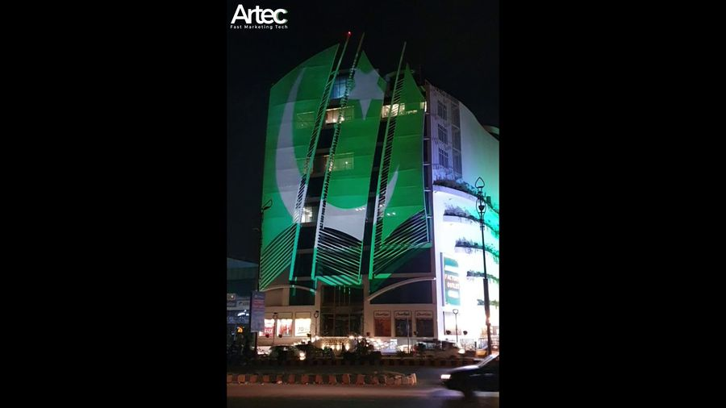

Laser or lamp projectors for projection mapping
Laser or lamp projectors for projection mapping: how light source life, brightness over time, uptime, safety and cost compare, with a checklist for your brief.

When a client asks for a projection mapping quote, one line on the equipment list tends to raise questions: are the projectors lamp-based or laser? Both can deliver a good show, and both have a place in our work at AKS. The difference shows up in maintenance, brightness over time, uptime, handling rules and budget rather than in the picture on a single good night. This note explains how we think about the choice, what to ask a supplier, and how to decide for your own project.
What actually differs
A traditional high-brightness projector uses a lamp, usually a high-pressure arc lamp, as its light source. A laser projector replaces that with a laser light source. Most laser projectors used for events are laser-phosphor designs, where a blue laser excites a phosphor to produce the white light that is then split into colour. A smaller group of projectors uses red, green and blue lasers directly. Only the light source changes, but it drives the rest of the comparison.
Whichever type you use, the lens, resolution, chip technology and optical engine still decide much of the image quality. Never pick a projector on the light source alone. Our note on projector brightness for projection mapping explains why lumens are only one part of the answer.
Light source life and maintenance
Lamps are consumables. They are typically rated for a few thousand hours, they dim as they age, and they need replacing on a schedule. For a one-night event that is rarely a concern. For a multi-week installation that runs every evening, it becomes a planning item: someone must track lamp hours, swap lamps, and accept that image brightness will drift between a new lamp and an old one.
Laser light sources are normally rated for far longer, often in the tens of thousands of hours according to manufacturers, and they do not need a scheduled lamp change. They still lose brightness gradually, and the rating describes a point where output has fallen to a stated fraction, not a point where the projector stops. Read the datasheet for the exact wording, and treat any quoted figure as a manufacturer rating rather than a promise.
Where several projectors share one surface, matching matters. Lamps of different ages produce visibly different brightness and sometimes a slight colour shift, which shows up in blend zones. We cover this in our guide to edge blending for multi-projector projection mapping. Fresh lamps in every unit, or a laser fleet that ages slowly and evenly, both help.
Brightness, colour and consistency
Both technologies are available in very bright models, and a rated brightness figure alone will not tell you which will look better on your wall. A few practical points we weigh:
- Brightness over the run. A lamp starts bright and fades; a laser can often be held at a steady output setting. For a long run, steadiness is useful.
- Brightness control. Many laser projectors let you set output in fine steps, which makes it easier to match several units to each other.
- Colour. Direct RGB laser projectors can reach a wider colour range than lamp models, but they cost more, and speckle, a fine grainy shimmer, can be visible on some surfaces. Laser-phosphor models avoid most of that.
- Black level and contrast. These depend more on the optical engine and lens than on the light source, so compare real models, not categories.
Whatever the specification says, we test the actual content on the actual surface. Colour and contrast behave differently on stone, painted render and glass, as we discuss in colour and contrast for projection mapping.
Uptime, start-up and failure behaviour
Lamp projectors need time to warm up and, after shutdown, time to cool before they can be moved or switched on again. Switching a lamp on and off repeatedly also shortens its life. On a show with a tight changeover or a restart after a fault, that waiting time matters.
Laser projectors typically switch on and reach working brightness quickly and can usually be shuttered or dimmed without the same penalty. Many models also let the output step down if a source module fails rather than going dark at once, but this varies by model, so ask.
Neither type removes the need for a plan. A lamp can fail without warning, a laser projector can still lose a power supply or a fan, and a processor or cable fault will stop the image regardless of the light source. Redundancy still means spare units, a clear swap procedure and rehearsal, as set out in backup and redundancy for projection mapping shows.
Handling, rigging and environment
Outdoor shows are hard on equipment, so the physical side counts. Points to check on the datasheet:
- Weight and size. Laser models are often comparable in weight to lamp models of similar output, and can be heavier or lighter depending on the design. Confirm the figure before you plan the rig, as covered in rigging and mounting projectors for outdoor projection mapping.
- Orientation. Some lamp projectors restrict tilt or upside-down mounting because of how the lamp behaves. Many laser models allow free orientation, which helps on balconies, roofs and truss. Check each model rather than assuming.
- Dust and sealing. Sealed optical engines reduce dust on the imaging chips and are valuable in dry, dusty locations. Filters still need cleaning.
- Power and heat. High-output projectors of either type draw significant power and produce heat, so cabling and ventilation need planning; see power and signal cabling for outdoor projection mapping.
Safety and site rules
Bright projectors of any type are classified for optical safety, and laser-based models are assessed under their own standard. Some high-output laser projectors fall into higher risk groups, which can mean keeping the audience out of the beam close to the lens and controlling access to the projector position. This is a handling rule, not a reason to avoid laser, but it must be known before the layout is fixed. Ask your supplier for the classification of the exact model and any required safe distance, and confirm that it fits your audience areas and any local permission conditions. Our guide to permissions for public projection mapping shows covers the authorisations side.
Cost and availability
Laser projectors have generally cost more to buy, and in rental the difference depends on what is in stock locally. Lamp models are widely available as rental units, and in some markets they remain the easier option for a single short event. The case for laser grows with the number of operating hours, the number of projectors that must match, and the cost of sending someone to maintain them. Because supply varies by city and by season, the practical question is often which suitable model is available for your dates. The wider picture of how equipment feeds into price is in what drives the cost of a projection mapping show.
Quick decision guide
| Situation | What we usually lean towards |
|---|---|
| One-night event, short run | Either type; choose by availability and budget |
| Weeks or months of nightly shows | Laser, to avoid lamp swaps and brightness drift |
| Many projectors blended on one surface | A matched set, with fine brightness control if possible |
| Awkward mounting angle or position | Check orientation limits first; often laser |
| Audience close to the projector position | Confirm the risk group and safe distance for the exact model |
| Tight budget, local rental stock | Compare quoted units, not categories |
Questions to put to a supplier
- What is the exact model, native resolution and rated brightness, and how is brightness measured?
- For lamps: how many hours are on each lamp, and are fresh lamps included?
- For laser: what is the rated source life and what does the rating mean in terms of remaining output?
- What are the mounting orientation limits, weight and power draw?
- What is the optical safety classification and any required restricted zone?
- How many spares are included, and how quickly can a unit be swapped on site?
A good supplier answers these from the datasheet without hesitation. A vague answer on hours, orientation or safety is a reason to look again.
Choose for the whole run, not the opening night
The opening night is not the only night that matters. The better question is how the projectors will look and behave on the last night of the run, when hours have accumulated and the weather has had its say. We have worked on sites from Rohtas Fort to the Pakistan Monument, and in every case the equipment decision followed the surface, the schedule and the site rather than the specification sheet alone. If you are planning a show and want help choosing between lamp and laser for your venue and dates, tell us the building, the run length and the audience areas through the contact section and we will put a recommendation together.
Choosing projectors for a show?
Tell AKS Creative Studio the building, run length and audience areas, and we will recommend a projector setup.
Start a conversation ↗